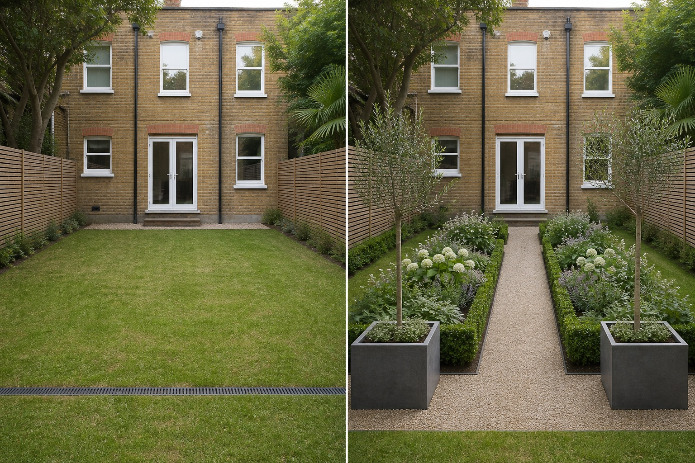

Find the strongest axis
Use a door, window, path or existing view as the organizing line.
Formal garden design is defined by readable axes, balanced masses, repeated forms, and controlled edges. Begin with the building and route; symmetry should support how the space works rather than hide drains, gates, roots, or irregular boundaries.
Editorially reviewed August 24, 2026.
This AI-generated comparison is visual inspiration, not a measured plan, specification, safety assessment, cost estimate, local approval, plant recommendation, or construction guarantee.

Use a door, window, path or existing view as the organizing line.
Pair broad shapes across the axis without assuming every plant or object must match exactly.
Make repeated beds and containers reachable for maintenance and preserve fixed access.
The facade, door, windows, fences, trees, drain, grade and camera remain unchanged.
Record doors, gates, paths, furniture movement, utilities, drains, roots, and maintenance access. Do not infer clearance from the image.
Note direct sun, shade, wind, overlooking, and views from inside across more than one time and season.
Locate falls, low points, downpipes, drains, and recurring wet areas. Preserve existing outlets.
Check permissions, product information, plant suitability, mature size, toxicity, invasiveness, upkeep, and applicable safety requirements.
Stop before setting out permanent geometry, cutting roots, altering levels, or selecting clipped plants without measured and local advice.
Clear axes, repeated forms, balanced visual weight and controlled edges create a formal impression.
Strong symmetry is common, but balanced repetition can work where the real site is not perfectly symmetrical.
Yes. A single axis and a few repeated shapes can communicate order without crowding the space.
Upload a level, wide photo to compare restrained concepts before making physical changes.
AI-generated visualizations are concepts. Check local conditions and consult a qualified professional before construction or planting.